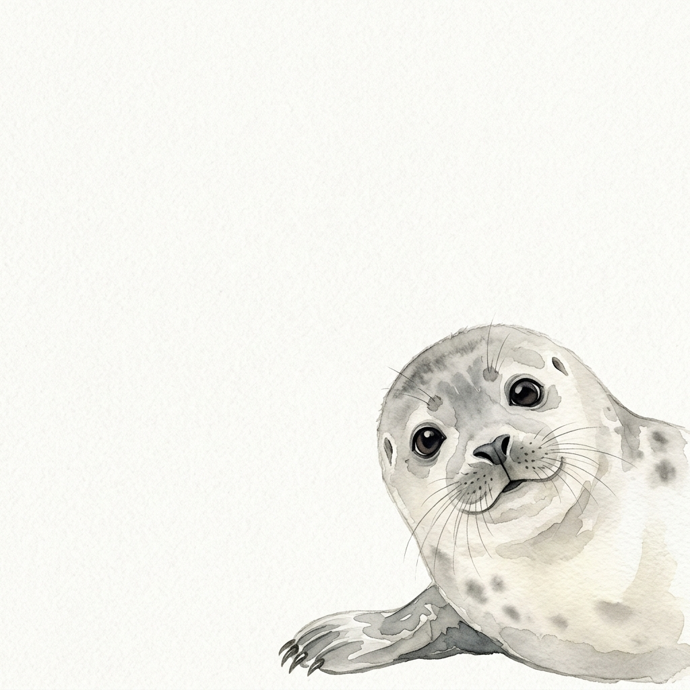
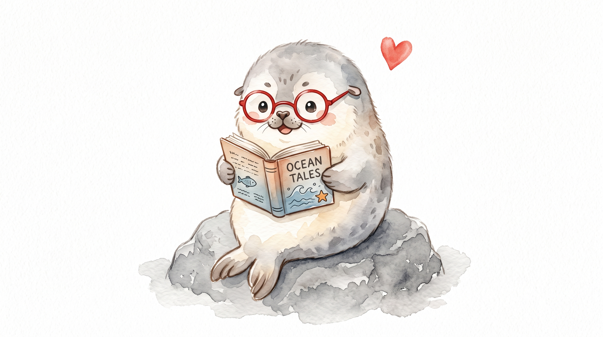
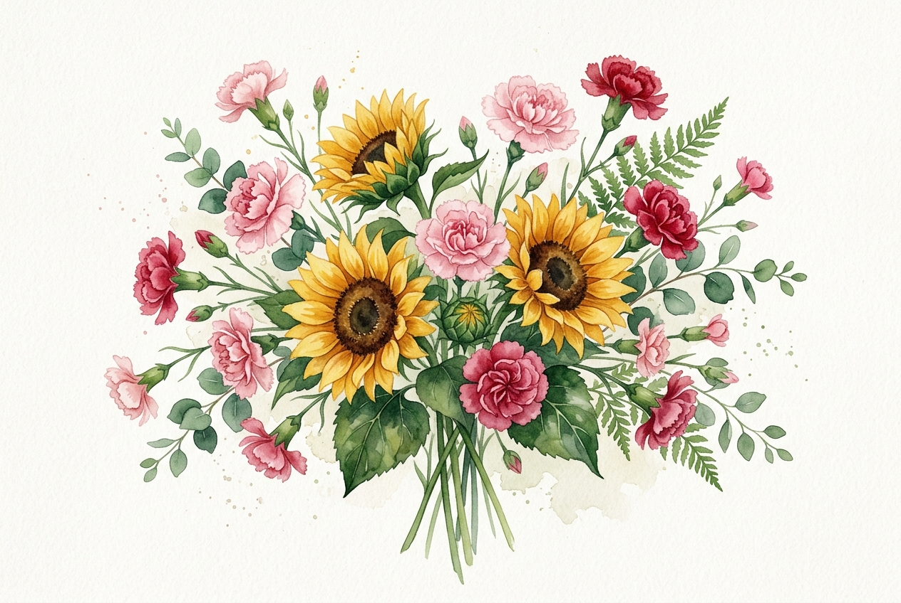
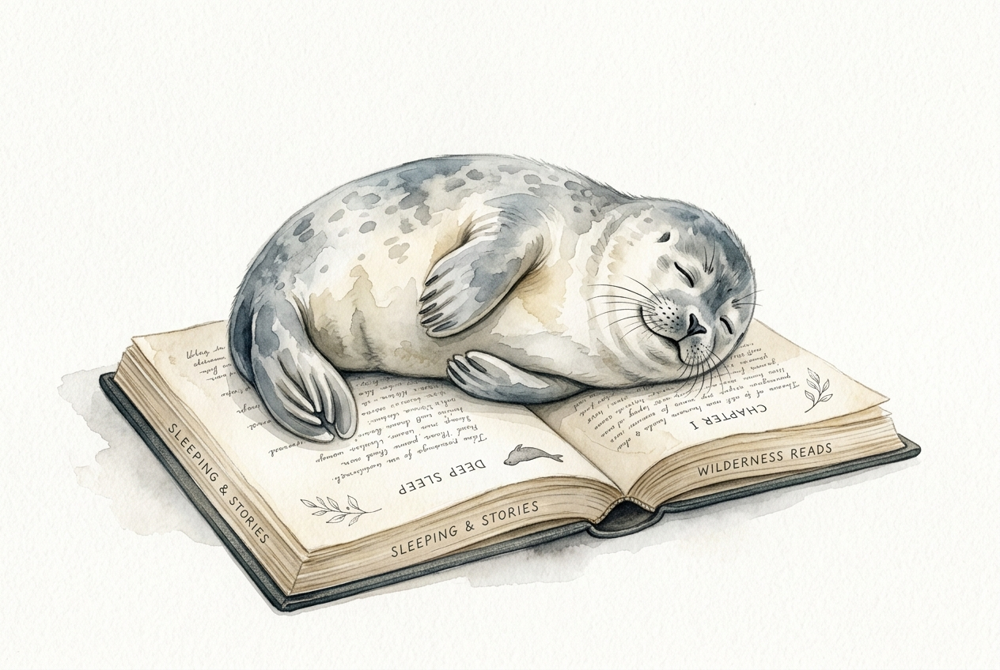
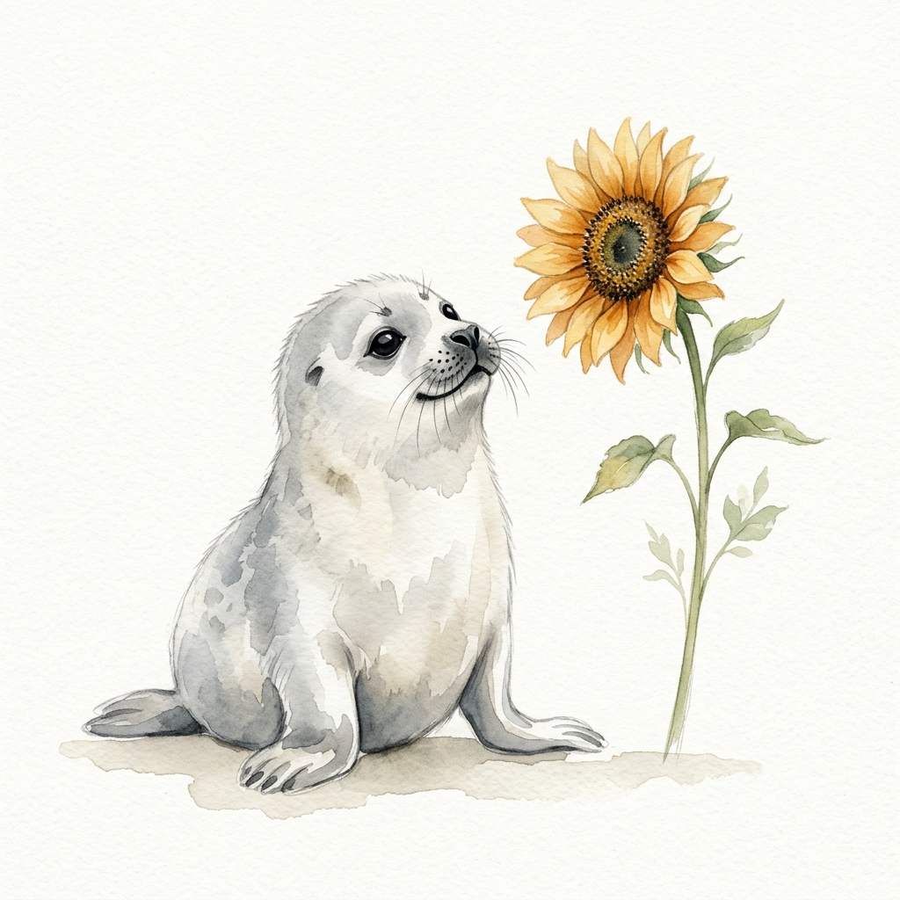

Algo que quería decirte
Para mi lectora favorita
✦ ✦ ✦
Pero hacerlo de la manera normal habría sido demasiado aburrido.
Así que pensé en complicarlo un poquito.

Para mi lectora favorita
✦ ✦ ✦La contraportada siempre es un misterio.
¿Sabes qué tienen en común una buena historia, una canción extraña y una persona interesante?
Que cuando encuentras la combinación correcta, no quieres que termine.
Esto tenía que estar aquí.
Hoy hay una excusa bastante buena para hablar de alguien que lee.
Y no de cualquier persona.
De mi lectora favorita.
No preguntes por qué.
Siempre he pensado que leer dice bastante de una persona.
Porque no cualquiera tiene paciencia para quedarse dentro de una historia, hacerse preguntas y encontrar algo interesante entre líneas.
Y supongo que por eso tenía sentido hacerte algo así.
Feliz Día del Lector a una de mis personas favoritas para compartir palabras.
Aunque tengo que admitir algo:
eres oficialmente mi lectora favorita.
No sé si exista un premio para eso.
Si existe, probablemente voy a inventarlo.
Sí, pensé bastante esto.
¿Qué hace especial a algo?
¿Que sea raro?
¿Que sea difícil de encontrar?
¿Que tenga una historia detrás?
¿O simplemente que haya alguien que lo mire de una manera diferente?
No tengo una respuesta definitiva.
Pero sí tengo una sospecha.
A veces lo especial no está en lo extraordinario.
Está en quién lo hace especial.
Esta parte me gustó.
Y antes de que alguien aparezca con rosas...
No.
Demasiado fácil.
Hay demasiadas flores en el mundo como para elegir siempre la misma.

Los girasoles porque tienen una forma bastante descarada de llamar la atención.
Y los claveles porque tienen más personalidad de la que suelen reconocerles.
Mucho mejor que elegir la opción predeterminada.
Prometo que hay una explicación.
Sí, también invité a una foca.
No preguntes.
Ella también quería participar.

Bueno... más o menos.
Y hablando de cosas que no deberían funcionar...
Hoy también se celebra algo bastante curioso.
La música extraña tiene algo interesante.
Al principio piensas:
"¿Qué estoy escuchando?"
Y después de un rato:
"Espera... ¿por qué me está gustando esto?"
Supongo que algunas cosas funcionan así.
No tienen que ser completamente normales para sentirse bien.
Esta pista era demasiado obvia.
Quizás por eso algunas personas también terminan gustándonos.
No porque tengan sentido.
Sino porque tienen algo que no encuentras en cualquier parte.
Me dijeron que una buena lectura cambia la perspectiva.
Tú llevas bastante tiempo demostrando la teoría.
Todavía no has llegado al final.
Y hablando de cosas que no son tan fáciles de encontrar...
supongo que tú también eres un poco así.
En el buen sentido.
Sigue.
Entre tantas cosas que podía regalarte, terminé haciendo una página.
Probablemente no era la opción más sencilla.
Pero tampoco quería darte algo que pudiera darle a cualquiera.
Así que pensé en las cosas que te gustan.
Los libros.
Las flores que no son las de siempre.
Las focas.
Las ideas raras.
La música que no siempre tiene sentido.
Y terminé aquí.
Supongo que eso dice algo.

Casi.
No sé si fue buena idea hacerte esto, porque ahora tendrás evidencia de que sí pienso en estas cosas.
Tenía pensado hacerlo sencillo. Claramente no salió así.
Supongo que algunas personas simplemente hacen que a uno le den ganas de escribir.
Espero que te haya gustado esta pequeña rareza.
Porque si algo aprendí haciendo esto es que no hace falta que algo sea perfectamente normal para que sea bonito.
A veces solo necesita ser sincero.
Y esto lo es.
Y sí... probablemente me gustó demasiado hacerte esto.
P.D. La foca aprobó el regalo.
Sí, llegaste. Sabía que lo harías.
Fin.